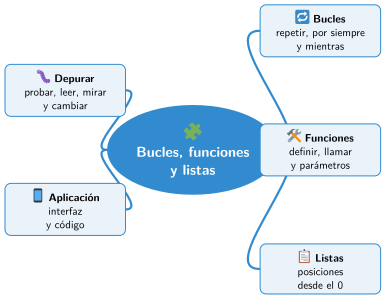

Bloque II · Programación
UD05 Programación por bloques II: bucles, funciones y aplicaciones
Sesiones
- Sesión 5.1 Bucles: repetir, por siempre y repetir hasta
- Sesión 5.2 Funciones y parámetros
- Sesión 5.3 Listas
- Sesión 5.4 Depurar un programa: encontrar y corregir errores
- Sesión 5.5 Crear una aplicación sencilla con App Lab
Al terminar la unidad
Mapa mental de la unidad

✏️ Repasa la unidad con el mapa: tapa una rama y explica en voz alta lo que pone.